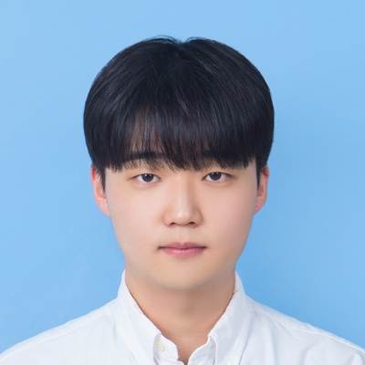

NLP Researcher, Letsur
Production NLP engines (information extraction, RAG chatbot, search assistant) and table-retrieval research
Ph.D. student · Graduate School of AI, KAIST
I am an Integrated M.S.–Ph.D. student at KAIST AI, where I work in the DAVIAN Lab, advised by Prof. Jaegul Choo. My research focuses on LLM personalization, agent memory, and retrieval, with the goal of building language agents that understand individual users and act on their behalf on the web.
In parallel with my studies, I worked for three years as an NLP researcher at Letsur (2022–2026), shipping production RAG and information-extraction systems for institutions such as the National Library of Korea. I am currently researching personalization of deep research agents through rubric-based reinforcement learning.

PersonaTrail, our benchmark for personalized web agents, is now on arXiv.
Membrane, a self-evolving safety memory for LLM agent defense, is now on arXiv.
Our adaptive table retrieval paper was accepted to Findings of ACL 2026.
Two papers (LiveWeb-IE, ExpGuard) were accepted to ICLR 2026.
2026
2024
Production NLP engines (information extraction, RAG chatbot, search assistant) and table-retrieval research
Artificial Intelligence Grand Challenge 2022
Graduate School of AI · Advisor: Prof. Jaegul Choo
GPA 4.21 / 4.5 (Major 4.42 / 4.5)